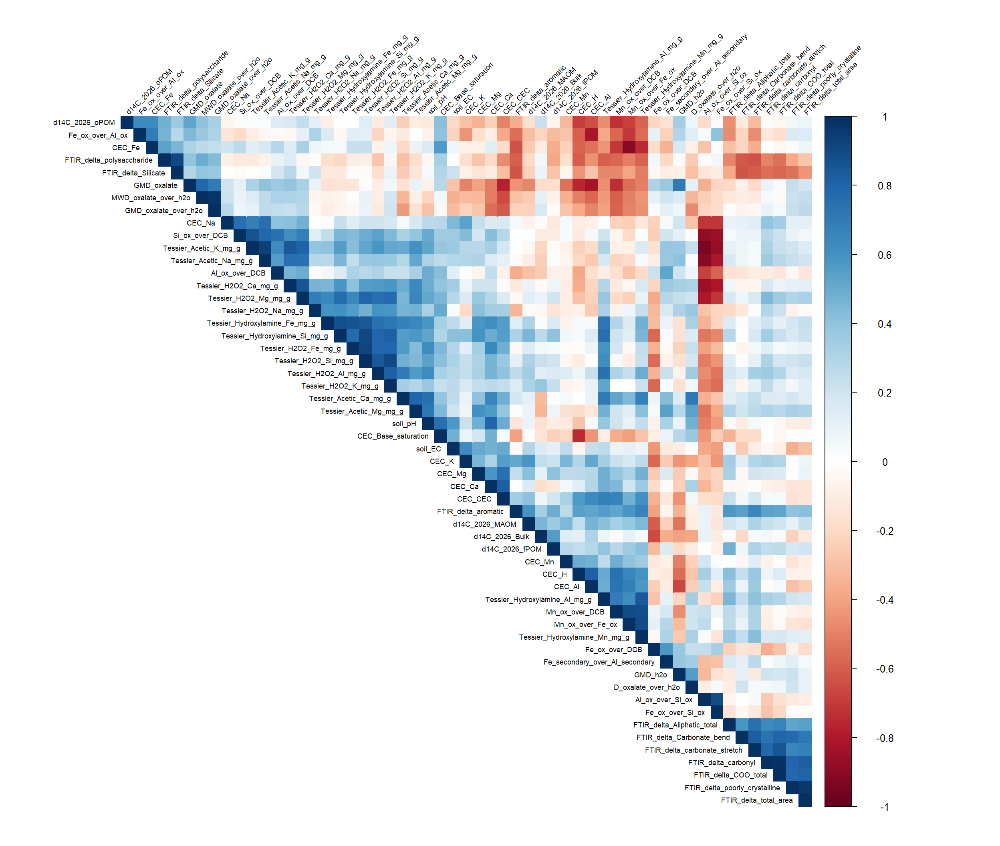
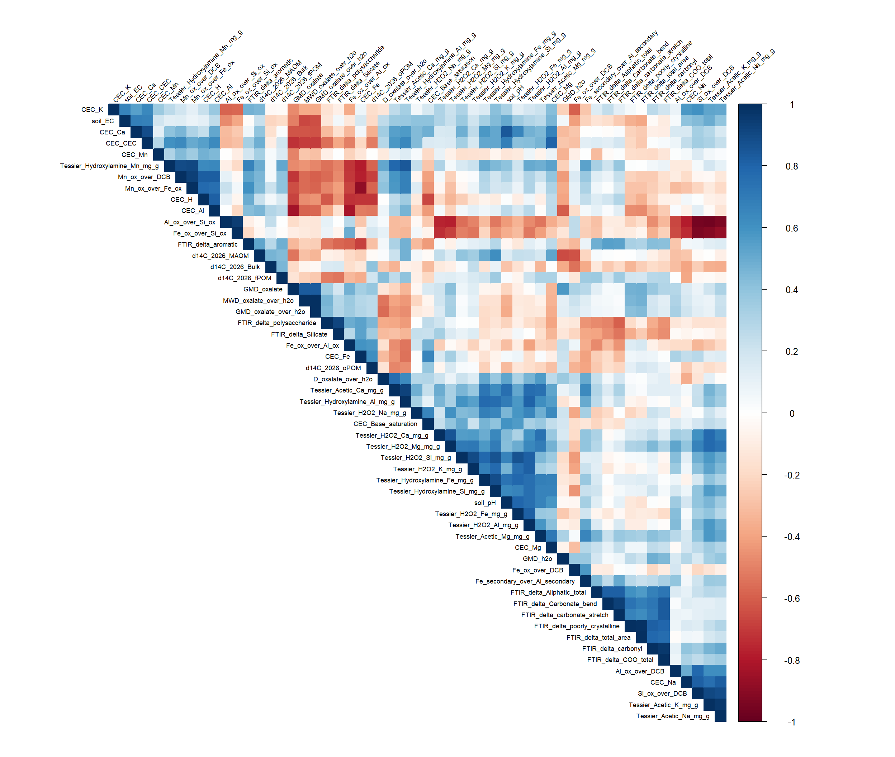
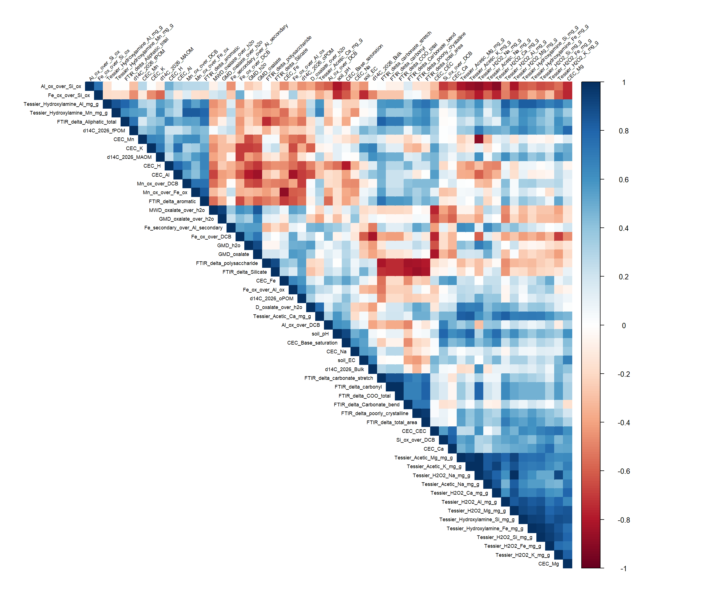
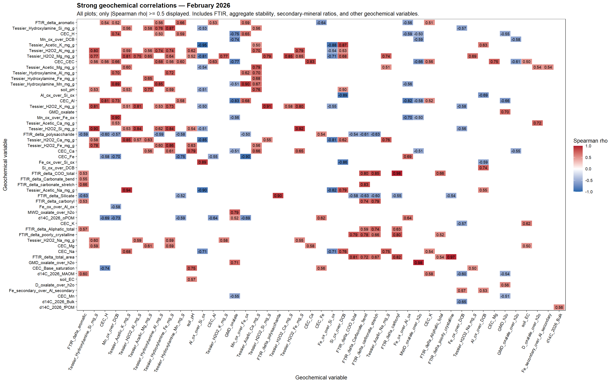
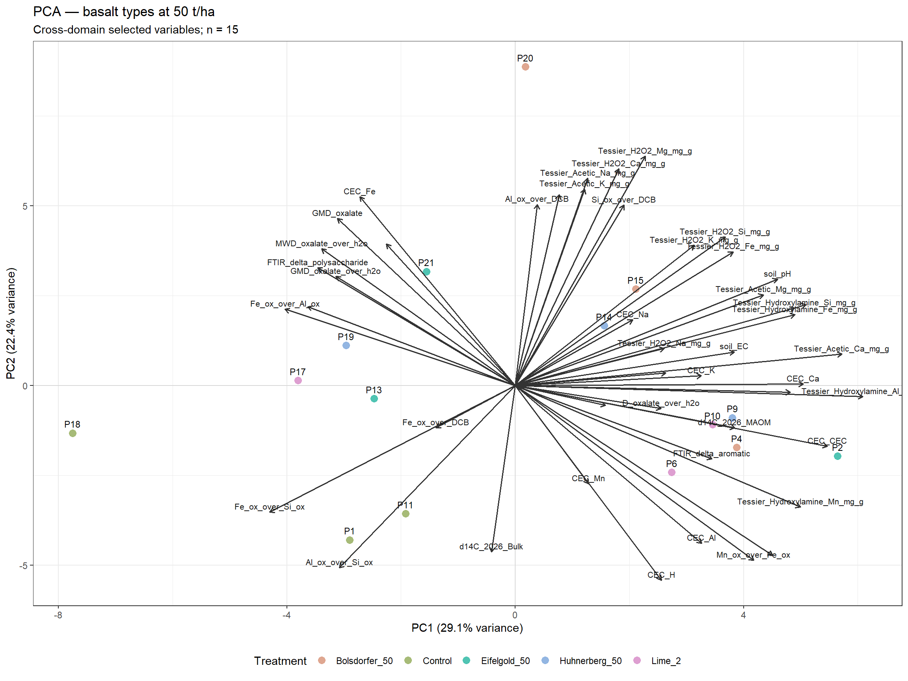
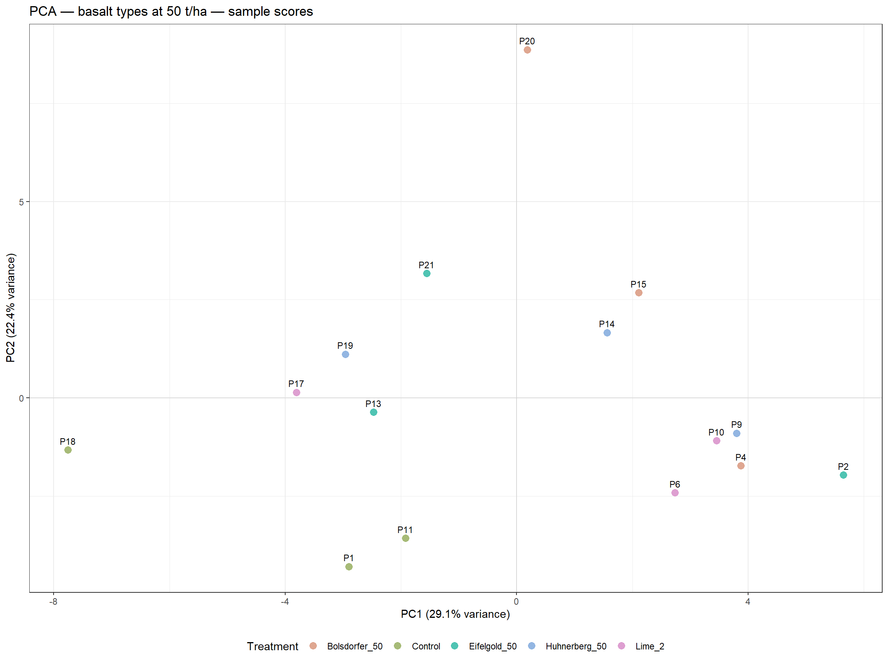
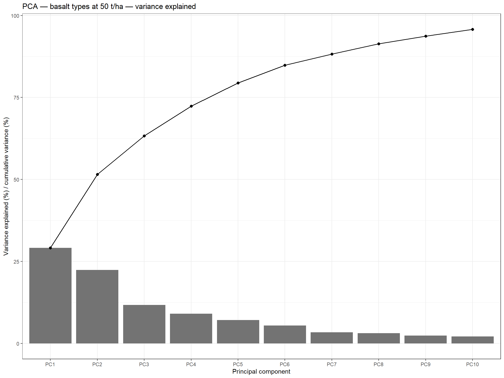
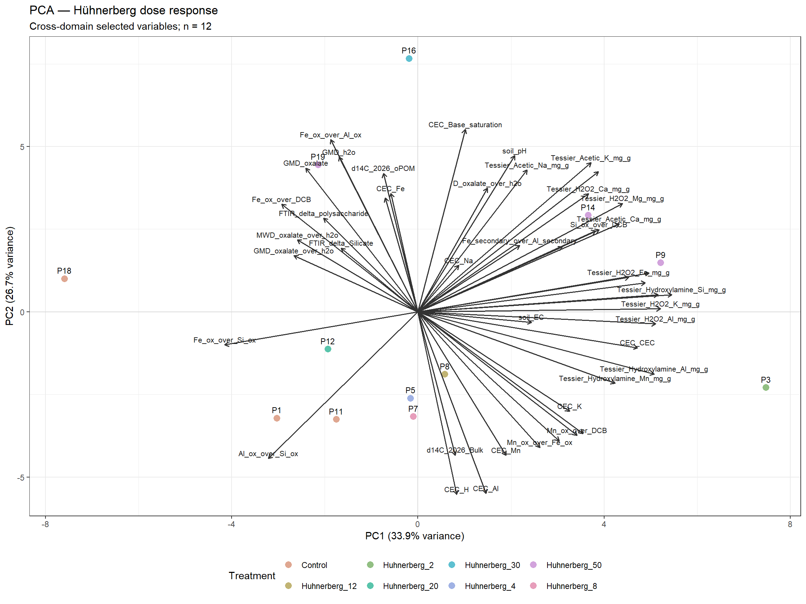
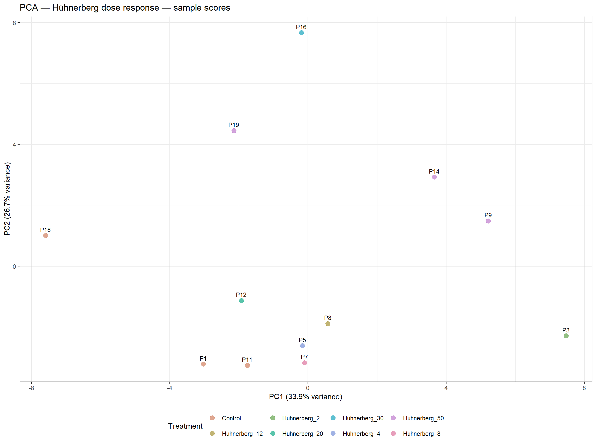
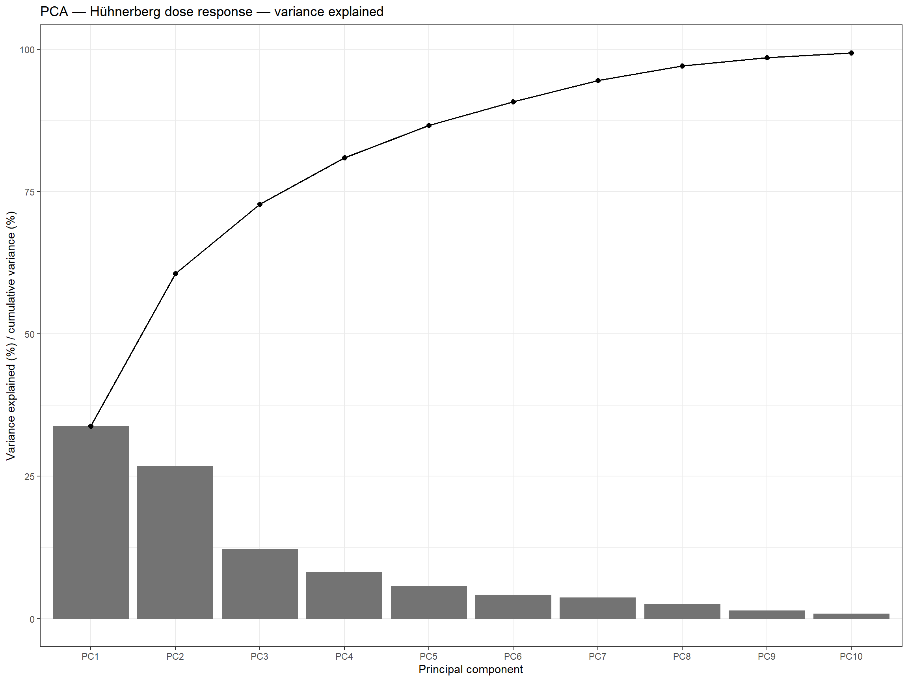

Malle integrated soil correlations — February 2026 pH and EC
Overview
This report integrates February 2026 Malle soil measurements to explore relationships among soil organic carbon fractions, aggregate stability, oxalate- and DCB-extractable Fe/Al/Mn/Si, Tessier extraction pools, CEC/exchangeable cations, FTIR peak changes, radiocarbon (Δ¹⁴C), and soil pH and electrical conductivity (EC) measured on 1 February 2026.
Pot-level pH and EC measurements are averaged within each plot. Aggregate-stability ratios comparing oxalate extraction with H₂O extraction and secondary-mineral ratios are included as candidate geochemical variables.
Spearman correlation heatmaps and subset-specific PCAs are shown below. Treatment metadata and carbon concentrations are retained only for context and plot labels. Cross-domain scatterplots are omitted. The report displays plots and model summaries only and does not write CSV or other result files.
Correlation heatmaps — all plots
Basalt-type experiment

Hühnerberg dose-response experiment

Strong Spearman correlations — all plots
Only correlations with an absolute Spearman correlation coefficient of at least 0.5 are displayed. FTIR peak changes, aggregate-stability ratios, and secondary-mineral ratios are included among the geochemical predictors.

# A tibble: 261 × 6
predictor outcome rho p_value p_adj_BH n
<fct> <fct> <dbl> <dbl> <dbl> <dbl>
1 FTIR_delta_carbonyl FTIR_delta_COO_… 0.981 6.84e-15 1.02e-11 21
2 MWD_oxalate_over_h2o GMD_oxalate_ove… 0.978 2.22e-14 1.65e-11 21
3 FTIR_delta_poorly_crystalline FTIR_delta_tota… 0.969 5.68e-13 2.81e-10 21
4 Al_ox_over_Si_ox Tessier_Acetic_… -0.945 1.06e-10 3.92e- 8 21
5 Tessier_Acetic_K_mg_g Tessier_Acetic_… 0.935 5.31e-10 1.58e- 7 21
6 Tessier_H2O2_Fe_mg_g Tessier_H2O2_Si… 0.918 4.46e- 9 1.10e- 6 21
7 Tessier_H2O2_Si_mg_g Tessier_H2O2_K_… 0.906 1.51e- 8 3.21e- 6 21
8 Al_ox_over_Si_ox Tessier_Acetic_… -0.903 2.20e- 8 3.26e- 6 21
9 FTIR_delta_polysaccharide FTIR_delta_Sili… 0.903 2.20e- 8 3.26e- 6 21
10 Tessier_Hydroxylamine_Si_mg_g Tessier_H2O2_Si… 0.903 2.20e- 8 3.26e- 6 21
# ℹ 251 more rowsCross-domain variable selection for PCA
The PCA variable selection uses only geochemical variables included in the correlation analyses. Metadata and carbon concentrations are not used as PCA variables.
Principal component analyses
Basalt types at 50 t/ha



Hühnerberg dose response



Stepwise multiple linear regression of soil carbon concentrations
Four stepwise AIC multiple linear regression (MLR) models are fitted for February 2026 carbon concentrations: C_Bulk, C_MAOM, C_oPOM, and C_fPOM.
Candidate predictors are the geochemical variables used elsewhere in the report, including the new aggregate-stability and secondary-mineral ratios. All d14C_2026_* variables are excluded. Treatment metadata and carbon responses are not used as predictors.
Each model is limited to three predictors and is required to retain at least five residual degrees of freedom. The tables show model fit, selected coefficients, and variance inflation factors (VIFs). No output files are written.
Eligible candidate predictors (radiocarbon variables excluded): GMD_h2o, GMD_oxalate, MWD_oxalate_over_h2o, GMD_oxalate_over_h2o, D_oxalate_over_h2o, Fe_ox_over_DCB, Al_ox_over_DCB, Mn_ox_over_DCB, Si_ox_over_DCB, Al_ox_over_Si_ox, Fe_ox_over_Si_ox, Fe_ox_over_Al_ox, Mn_ox_over_Fe_ox, Fe_secondary_over_Al_secondary, Tessier_Acetic_Ca_mg_g, Tessier_Acetic_K_mg_g, Tessier_Acetic_Na_mg_g, Tessier_Acetic_Mg_mg_g, Tessier_Hydroxylamine_Fe_mg_g, Tessier_Hydroxylamine_Al_mg_g, Tessier_Hydroxylamine_Mn_mg_g, Tessier_Hydroxylamine_Si_mg_g, soil_pH, soil_EC, Tessier_H2O2_Fe_mg_g, Tessier_H2O2_Al_mg_g, Tessier_H2O2_Si_mg_g, Tessier_H2O2_Ca_mg_g, Tessier_H2O2_K_mg_g, Tessier_H2O2_Na_mg_g, Tessier_H2O2_Mg_mg_g, CEC_H, CEC_Ca, CEC_K, CEC_Mg, CEC_Na, CEC_Al, CEC_Fe, CEC_Mn, CEC_CEC, CEC_Base_saturation, FTIR_delta_aromatic, FTIR_delta_Carbonate_bend, FTIR_delta_carbonate_stretch, FTIR_delta_carbonyl, FTIR_delta_Aliphatic_total, FTIR_delta_COO_total, FTIR_delta_polysaccharide, FTIR_delta_poorly_crystalline, FTIR_delta_Silicate, FTIR_delta_total_area
Model comparison
| response | n | residual_df | n_predictors | AIC | AICc | R_squared | adjusted_R_squared | residual_SE | selected_predictors |
|---|---|---|---|---|---|---|---|---|---|
| C_Bulk | 10 | 6 | 3 | -23.996 | -15.996 | 0.973 | 0.959 | 0.057 | CEC_CEC; CEC_K; CEC_Ca |
| C_MAOM | 10 | 6 | 3 | -23.332 | -15.332 | 0.951 | 0.927 | 0.059 | GMD_oxalate; soil_pH; CEC_K |
| C_oPOM | 10 | 6 | 3 | 42.679 | 50.679 | 0.966 | 0.949 | 1.601 | CEC_K; Tessier_H2O2_K_mg_g; GMD_oxalate_over_h2o |
| C_fPOM | 10 | 6 | 3 | 47.815 | 55.815 | 0.903 | 0.855 | 2.069 | Mn_ox_over_DCB; Tessier_Acetic_Mg_mg_g; Tessier_H2O2_Na_mg_g |
Selected model coefficients
| response | term | estimate | std_error | statistic | p_value |
|---|---|---|---|---|---|
| C_Bulk | (Intercept) | 0.5888 | 0.1337 | 4.4039 | 0.0045 |
| C_Bulk | CEC_CEC | -0.0818 | 0.0688 | -1.1892 | 0.2793 |
| C_Bulk | CEC_K | 2.2117 | 0.3422 | 6.4639 | 0.0007 |
| C_Bulk | CEC_Ca | 0.4048 | 0.0919 | 4.4042 | 0.0045 |
| C_MAOM | (Intercept) | 5.7563 | 1.3045 | 4.4125 | 0.0045 |
| C_MAOM | GMD_oxalate | -3.8398 | 0.5008 | -7.6678 | 0.0003 |
| C_MAOM | soil_pH | -0.6468 | 0.2031 | -3.1844 | 0.0190 |
| C_MAOM | CEC_K | 0.8601 | 0.3173 | 2.7112 | 0.0350 |
| C_oPOM | (Intercept) | 80.2586 | 4.0887 | 19.6294 | 0.0000 |
| C_oPOM | CEC_K | -106.0463 | 8.2046 | -12.9253 | 0.0000 |
| C_oPOM | Tessier_H2O2_K_mg_g | -1545.6718 | 343.5683 | -4.4989 | 0.0041 |
| C_oPOM | GMD_oxalate_over_h2o | -9.2271 | 2.9712 | -3.1055 | 0.0210 |
| C_fPOM | (Intercept) | 31.4825 | 2.9495 | 10.6738 | 0.0000 |
| C_fPOM | Mn_ox_over_DCB | -16.9175 | 2.8634 | -5.9082 | 0.0010 |
| C_fPOM | Tessier_Acetic_Mg_mg_g | 582.9350 | 121.4671 | 4.7991 | 0.0030 |
| C_fPOM | Tessier_H2O2_Na_mg_g | -2953.7502 | 990.8757 | -2.9809 | 0.0246 |
Variance inflation factors
| response | term | VIF |
|---|---|---|
| C_Bulk | CEC_CEC | 11.032 |
| C_Bulk | CEC_K | 1.787 |
| C_Bulk | CEC_Ca | 8.917 |
| C_MAOM | GMD_oxalate | 1.687 |
| C_MAOM | soil_pH | 1.289 |
| C_MAOM | CEC_K | 1.438 |
| C_oPOM | CEC_K | 1.307 |
| C_oPOM | Tessier_H2O2_K_mg_g | 1.671 |
| C_oPOM | GMD_oxalate_over_h2o | 1.722 |
| C_fPOM | Mn_ox_over_DCB | 1.047 |
| C_fPOM | Tessier_Acetic_Mg_mg_g | 1.470 |
| C_fPOM | Tessier_H2O2_Na_mg_g | 1.481 |
Full model summaries
C_Bulk
Call: lm(formula = reformulate(new_terms, response = response), data = dat)
Residuals: Min 1Q Median 3Q Max -0.072601 -0.027335 -0.004634 0.028216 0.078241
Coefficients: Estimate Std. Error t value Pr(>|t|)
(Intercept) 0.58880 0.13370 4.404 0.00455 ** CEC_CEC -0.08176 0.06876 -1.189 0.27930
CEC_K 2.21174 0.34217 6.464 0.00065 * CEC_Ca 0.40477 0.09190 4.404 0.00455 — Signif. codes: 0 ‘’ 0.001 ’’ 0.01 ’’ 0.05 ‘.’ 0.1 ’ ’ 1
Residual standard error: 0.05708 on 6 degrees of freedom Multiple R-squared: 0.9729, Adjusted R-squared: 0.9594 F-statistic: 71.85 on 3 and 6 DF, p-value: 4.301e-05
C_MAOM
Call: lm(formula = reformulate(new_terms, response = response), data = dat)
Residuals: Min 1Q Median 3Q Max -0.092677 -0.027449 -0.001322 0.035281 0.063202
Coefficients: Estimate Std. Error t value Pr(>|t|)
(Intercept) 5.7563 1.3045 4.413 0.004507 ** GMD_oxalate -3.8398 0.5008 -7.668 0.000257 ** soil_pH -0.6468 0.2031 -3.184 0.018971
CEC_K 0.8601 0.3173 2.711 0.035049 *
— Signif. codes: 0 ‘’ 0.001 ’’ 0.01 ’’ 0.05 ‘.’ 0.1 ’ ’ 1
Residual standard error: 0.059 on 6 degrees of freedom Multiple R-squared: 0.9514, Adjusted R-squared: 0.9271 F-statistic: 39.17 on 3 and 6 DF, p-value: 0.0002461
C_oPOM
Call: lm(formula = reformulate(new_terms, response = response), data = dat)
Residuals: Min 1Q Median 3Q Max -1.51163 -1.04718 -0.08136 0.59913 2.50116
Coefficients: Estimate Std. Error t value Pr(>|t|)
(Intercept) 80.259 4.089 19.629 1.13e-06 CEC_K -106.046 8.205 -12.925 1.32e-05 Tessier_H2O2_K_mg_g -1545.672 343.568 -4.499 0.00411 ** GMD_oxalate_over_h2o -9.227 2.971 -3.105 0.02097 *
— Signif. codes: 0 ‘’ 0.001 ’’ 0.01 ’’ 0.05 ‘.’ 0.1 ’ ’ 1
Residual standard error: 1.601 on 6 degrees of freedom Multiple R-squared: 0.9662, Adjusted R-squared: 0.9493 F-statistic: 57.21 on 3 and 6 DF, p-value: 8.324e-05
C_fPOM
Call: lm(formula = reformulate(new_terms, response = response), data = dat)
Residuals: Min 1Q Median 3Q Max -2.6652 -1.0123 -0.1321 0.9656 2.6031
Coefficients: Estimate Std. Error t value Pr(>|t|)
(Intercept) 31.482 2.950 10.674 3.99e-05 * Mn_ox_over_DCB -16.917 2.863 -5.908 0.00105 Tessier_Acetic_Mg_mg_g 582.935 121.467 4.799 0.00300 ** Tessier_H2O2_Na_mg_g -2953.750 990.876 -2.981 0.02461 *
— Signif. codes: 0 ‘’ 0.001 ’’ 0.01 ’’ 0.05 ‘.’ 0.1 ’ ’ 1
Residual standard error: 2.069 on 6 degrees of freedom Multiple R-squared: 0.9034, Adjusted R-squared: 0.8551 F-statistic: 18.71 on 3 and 6 DF, p-value: 0.001899